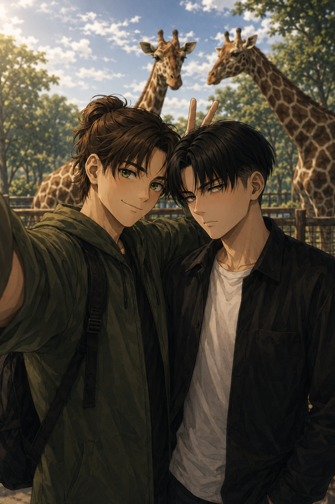
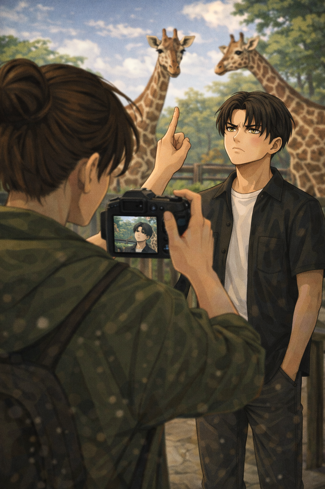

Zoo Day
Shared POV

They chose the zoo carefully.
Not a place built for spectacle.
No narrow cages.
No animals pacing without purpose.
This one was a rehabilitation center —
wide spaces, careful explanations,
animals that had been rescued, treated,
and were being prepared to return to the wild.
Levi approved.
Eren approved enthusiastically.
He took Levi’s hand the moment they walked in,
fingers warm, confident,
swinging their joined hands just a little as they followed the path.
“Look at this place,” Eren said, already smiling.
“You’re excited,” Levi replied.
“Obviously.”
Eren stopped at every sign.
Read everything.
Out loud sometimes,
like Levi hadn’t been standing right next to him the whole time.
Levi didn’t complain.
He liked listening.
They reached the giraffes mid-morning.
Eren froze.
Just stopped walking entirely,
eyes wide, mouth slightly open.
“Levi,” he said, awed.
“Yes,” Levi replied patiently.
“They’re… so cool.”
Levi glanced at the giraffes —
tall, elegant, moving slowly with a grace that felt unreal.
Then he looked back at Eren,
openly delighted, glowing with wonder.
“You’re impressed,” Levi said.
“You're kidding ? I’m in love with them,” Eren corrected.
Levi snorted.
Eren pulled his phone out almost immediately.
“Stand there.”
“Why.”
“Because I want a picture.”
“You already have pictures of giraffes.”
“I don’t have pictures of you with giraffes.”
Levi sighed but stayed where he was.
“Smile,” Eren said.
Levi stared at him flatly.
“That is smiling.”
“No it’s not,” Eren laughed.
“That’s your ‘I’m tolerating life’ face. Come on, smile for me.”
“Take the picture.”
Eren lowered the phone.
“Smile like you’re not annoyed.”
Levi rolled his eyes —
and Eren snapped the picture right then.
(Curious about Eren's masterpiece ?)

“Got it,” Eren said, pleased.
“Delete that.”
“Absolutely not.”
They moved on,
still bickering lightly,
hands finding each other again without effort.
At the bird enclosure,
Eren gasped when something flew close.
Levi didn’t even flinch.
“You’re not impressed?” Eren asked.
“I’ve seen birds. And I live with a parrot.”
“You love that parrot. Shut up, you’re impossible.”
Levi hid his smile.
They slowed down in the early afternoon, not because they were tired, but because the day had settled into something easy, something that didn’t ask them to keep moving.
The ice cream stand sat a little off the main path, shaded by trees, the smell of sugar and waffle cones hanging lazily in the air.
Levi stopped first — just enough that Eren noticed.
“Ice cream,” Levi said. “We’ve been walking for hours.”
Eren turned to him, surprised for half a second, then smiled like he’d been waiting for the suggestion.
“I was hoping you’d say that.”
Levi ordered without hesitation. Something familiar. Something he already knew he liked.
Eren, predictably, hesitated. He leaned forward to read the menu properly, weighing options like this choice carried consequences.
“You do this every time,” Levi said. “Just pick one.”
“I am picking,” Eren replied. “Carefully.”
When they sat down nearby, Levi chose the spot, settling on a low wall in the shade.
He reached out first, fingers hooking lightly into the sleeve of Eren’s jacket, tugging him closer without looking.
Eren came willingly, knees brushing Levi’s, shoulders close.
Eren took a bite of his ice cream, frowned almost immediately, then glanced at Levi’s.
“Yours looks better.”
Levi didn’t answer. He just held his cone out, arm resting casually against Eren’s.
“Try it, then,” he said. “We both know you’re gonna steal it.”
Eren grinned and leaned in, taking a bite far too generous to be polite.
“That’s unfair,” Eren said. “Why is yours always better?”
“Because I don’t overthink it,” Levi replied. “And because you always want what I have.”
Eren laughed, unapologetic, and leaned closer again.
Levi adjusted instinctively, angling his body so Eren fit more comfortably against him, their sides pressed together now.
He took a bite of his own ice cream, then another, slower this time.
Levi huffed a quiet laugh. And let Eren steal another bite anyway.
They stayed like that, sharing without negotiating, cones melting, fingers sticky, Levi’s arm resting loosely behind Eren’s back, thumb pressing there every so often, grounding him.
Just warmth, sweetness, and the quiet comfort of knowing exactly how close they could stand without needing to ask.
They ended up in the gift shop before leaving.
Levi hadn’t planned on buying anything.
Eren picked up a plush giraffe.
“No.”
“It’s educational.”
“It’s ridiculous.”
“Look,” Eren said, holding it up next to Levi’s face.
“Same expression. It's coming home with us.”
Levi sighed.
The giraffe came home with them.
Outside, the afternoon sun was warm,
the day unhurried.
Eren leaned into him as they walked back toward the exit.
“This was a good date.”
Levi glanced at him.
“It was.”
Eren smiled —
bright, unguarded,
and squeezed his hand.
Levi squeezed back.
Love didn’t always have to hurt.
Sometimes it laughed,
walked slowly,
and bought a stupid plush giraffe on the way out.
...And one more memory to frame at home.